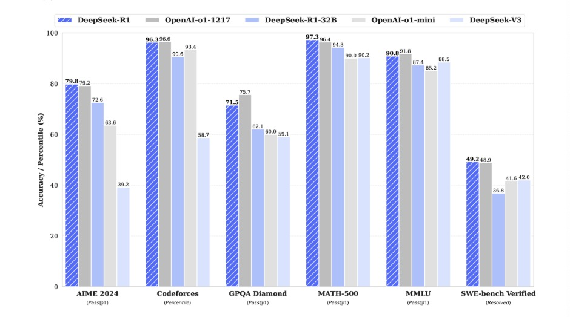
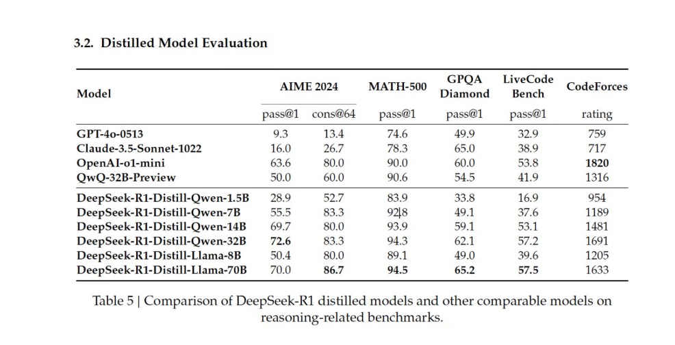

Introduction
In 1950, in a piece entitled COMPUTING MACHINERY AND INTELLIGENCE, Alan Turing formed the basis for digital computers.[1] Here, Turing proposes the idea of digital computing with a broader philosophical approach to a definition of intelligence; in order to create intelligent systems, we must first explicitly define what it means to be intelligent. The Turing Test evaluates intelligence with a human baseline—if the machine performs indiscernible relative to a human, it is deemed intelligent. His work closely mimics modern philosopher John Danaher, who argued in 2020 that robots can attain moral status on the basis of performative equivalence, rooted in ethical behaviorism.[2] If a robot exhibits behavior equivalent to that of a human being, then it should be granted moral status regardless of internal constitution. Yet, this definition of intelligence troubles many scholars.
While ethicality may be granted on the basis of behavioral equivalence, intelligence may better come from precision in a myriad of subjects. This discussion is fruitful due to the emphasis of language models (LMs) like OpenAI's GPT σ1, DeepSeek's R1, Google DeepMind's Gemini 2.0, Meta’s Llama 3.1, Anthropic’s Claude 2.1, and Mistral’s 7B being evaluated as, “How well can this model answer my question?” instead of, “How does this model mimic the behavior of a human”. Machine intelligence is formed given an objective function—what are we trying to maximize, and what are we trying to minimize. In the case of LMs, we aim to maximize the probability of predicting the most accurate sequence of words given a question. In helicopters, we minimize the probability of system instability using main/tail rotor actuators. In the age of exponential compute, objectives dictate machine learning.
While most papers begin with the approach and experimentation, I’d like to explore the objectives in which DeepSeek-R1 is tested on. Then, I’ll explain what makes DeepSeek-R1 stand out from other models, especially at such a small scale.
Datasets and Results
The American Invitational Mathematics Examination (AIME) is a well-known competition for mathematical reasoning and problem-solving skills. The exam has been administered by the Mathematical Association of America (MAA) from 1983 to 2024.[3] Assuming that these questions were not in a LM’s training set, AIME is an excellent evaluator for creativity and attention to mathematical patterns. While OpenAI’s previous state-of-the-art σ1 model achieves 79.2% accuracy on AIME 2024, DeepSeek-R1 attains 79.8% accuracy.
Codeforces is a competitive programming platform created in 2009 involving contests, a vast collection of algorithmic problems, and an elo-based rating system where users are ranked based on skill level.[4] It is an excellent resource for LM testing because the questions are published after the date of training and show a model’s performance relative to real, talented programmers who are competing to rank up. Using Division 2 problems, DeepSeek-R1 attains a ranking percentile of 96.3% relative to human programmers in the competition. For reference, OpenAI’s σ1 achieves a superior 96.6% accuracy.
The Graduate-Level Google-Proof Q&A (GPQA) Benchmark is a challenging set of 448 graduate-level multiple-choice questions in biology, chemistry, and physics. Developed by NYU, Cohere, and Anthropic, the benchmark aims to reduce hallucinations and guide AI-driven research systems.[5] DeepSeek-R1 performs considerably worse, with an accuracy of 71.5% compared to σ1’s 75.7%.
The MATH-500 dataset is a curated subset of 500 problems from the MATH dataset, developed by researchers at UC Berkeley in 2021. MATH comprises 12,500 competition-level mathematics problems, of which span seven subjects, each with a difficulty (1 to 5): Pre-Algebra, Algebra, Number Theory, Counting and Probability, Geometry, Intermediate Algebra, Precalculus.[6] Of these problems, the HuggingFaceH4 organization curated 500 of these problems to create a more focused benchmark for evaluating mathematical reasoning. For this task, DeepSeek-R1 achieves 97.3% accuracy over σ1’s 96.4%.
Measuring Massive Multitask Language Understanding (MMLU) is a benchmark from research at UC Berkeley that contains 16,000 multiple-choice questions spanning 57 subjects in the humanities, social sciences, STEM, and other fields. The benchmark tests declarative knowledge (facts/information) and procedural knowledge (how to apply concepts) in a diverse field of areas.[7] DeepSeek-R1 again underperforms, with a score of 90.8% accuracy as opposed to o1’s 91.8%.
SWE-BENCH is a framework developed by researchers at Princeton University and the University of Chicago that tasks LMs with resolving issues from GitHub repositories. Each task requires analyzing an issue, understanding potentially large repositories, and resolving issues. The dataset contains 2,294 curated task instances from 12 popular Python repositories. DeepSeek-R1 achieves 49.2% accuracy as opposed to o1’s 48.9%.

On paper, DeepSeek-R1 performs roughly equivalent to openAI’s o1. DeepSeek-R1’s popularity, however, triumphs that of o1 due to its ability to convert its reasoning capabilities into smaller models in a process known as distillation.
The DeepSeek-R1-Distill-Quen-1.5B model requires 3.5 GB of VRAM, of which can run on an NVIDIA RTX3060 12GB GPU.[7] It is remarkable that such a small model can achieve competitive results—not quite as good as LLMs, but good enough for many applications. This is mind-blowingly state-of-the-art for smaller models and cheap compute.

DeepSeek-R1 accomplishes this through Group Relative Policy Optimization (GRPO) and the Cold-Start Fine-Tuning process. I’ll go into each of these below.
Group Relative Policy Optimization
Typically, LMs benefit from policy optimization, a process in which the policy is the probability distribution that the model uses to generate outputs given inputs. Proximal Policy Optimization (PPO) is a reinforcement learning (RL) algorithm. The policy ratio measures the relative change in probability of selecting an action under the new policy πθ compared to the old policy πθold. Consider πθ(o|q) as the probability of generating output o given input q under the current policy and πθold(o|q) be the same under the old policy. Such a policy would emphasize how much we want to emphasize the advantage function A(o, q) of an action. The policy ratio is,
\( r(o, q, \Theta) = \frac{\pi_{\theta}(o|q)}{\pi_{\theta_{\text{old}}}(o|q)} \)
If the policy ratio r(o, q, Θ) changes too often, exploding gradients, overfitting to rewards, and oscillation can occur. This induces the need for a clipping parameter ε.
The clipping parameter \(\epsilon\) (typically 0.1–0.2) limits how far the policy can deviate from 1. It restricts the policy ratio \(r(o, q, \Theta)\) to the range \([1 - \epsilon, 1 + \epsilon]\):
\[ \text{clip}(r, 1 - \epsilon, 1 + \epsilon) = \begin{cases} 1 - \epsilon, & \text{if } r < 1 - \epsilon \\ r, & \text{if } 1 - \epsilon \leq r \leq 1 + \epsilon \\ 1 + \epsilon, & \text{if } r > 1 + \epsilon \end{cases} \]
The advantage function \(A(o, q)\) measures how much better or worse taking an action \(o\) in a given state (or query) \(q\) is compared to the average action. It prioritizes actions that lead to higher rewards and is a rich field of study, beyond the scope of this overview. The advantage-scaled policy ratio \(r(o, q, \Theta)\) and the clipped policy ratio \(\text{clip}(r(o, q, \Theta), 1 - \epsilon, 1 + \epsilon)\) are minimized to ensure the contribution of the policy ratio to the loss function remains within the clipping range. This minimization affects the clipping of the policy-loss contribution.
The expectation of this minimized policy is taken by sampling \(q\) from the query distribution \(P(q)\) and \(o\) from the old policy \(\pi_{\Theta_\text{old}}\)(o|q). This yields the objective of PPO:
\[ J_\text{PPO} = \mathbb{E}_{q \sim P(q), o \sim \pi_{\Theta_\text{old}}(o|q)} \left[ \min\big(r(o, q, \Theta)A(o, q), \text{clip}(r, 1 - \epsilon, 1 + \epsilon)A(o, q)\big) \right] \]
Rather than computing the advantage for a single output, Group Relative Policy Optimization (GRPO) uses normalized group rewards to remove the dependence on a critic model. In this policy objective algorithm, we sample from the policy group \(\{i_j\}^G_j \sim \pi_{\Theta_\text{old}}\)(o|q). Here, \(G\) is a policy group hyperparameter. GRPO reduces compute and memory by removing the need for a separate critic network by using group-based advantage normalization:
\[ A_i = \frac{r_i - \text{mean}(r_{i^{'}, x^{'}, r^{'}, q})} {\text{std}(r_{i^{'}, x^{'}, r^{'}, q})} \]
GRPO takes the average of the difference between the new clipped objective and the KL divergence of the old \(\pi_{\Theta_\text{old}}\) and current \(\pi_{\text{ref}}\) policies:
\[ J_\text{GRPO} = \mathbb{E}_{q \sim P(q), \{i_j\}^G_j \sim \pi_{\Theta_\text{old}}(o|q)} \left[ \frac{1}{G} \sum_{i=1}^G \big(\min(r(o, q, \Theta)A_i, \text{clip}(r, 1 - \epsilon, 1 + \epsilon)A_i) - \beta D_\text{KL}(\pi_{\Theta_\text{old}} || \pi_{\text{ref}})\big) \right] \]
Training Process
Researchers trained DeepSeek-R1-Zero using reinforcement learning (RL) without supervised fine-tuning (SFT). It’s important to note that DeepSeek-R1 starts with a pre-trained base model, DeepSeek-V3-Base, which has already extensively undergone unsupervised pretraining on a large corpus of text. DeepSeek-V3 is a Mixture-of-Experts (MoE) model that utilizes Multi-Head Latent Attention (MLA), Auxiliary-Loss-free Load Balancing, Multi-Token Prediction (MTP), FP8 Mixed Precision Training, amongst other computational and cost-effective improvements. The scope of DeepSeek-V3 is beyond this primer, but I’m in the process of an annotated paper write-up, so feel free to check if it’s up yet.
While DeepSeek-R1-Zero developed reasoning behaviors and problem-solving skills, it faced poor readability, language mixing, and a lack of structured responses. To enhance readability and reduce RL-induced instability, DeepSeek-R1 introduces a small amount of supervised fine-tuning data (Cold-Start Data) before RL.
Data is collected using few-shot prompting with high-quality Chain of Thought (CoT) examples, model-generated reasoning responses, and human post-processing. The model undergoes fine-tuning with thousands of high-quality long-CoT examples. These initial SFT tags summarize the reasoning at the end of responses and remove mixed-language errors.
Since SFT suffers from limited generalization and overfitting, RL is employed. The fine-tuned model is then trained using GRPO with language consistency rewards, format rewards, and accuracy-based rewards. In the advantage function \(A_i\) of GRPO described above, the actual reward \(r_i\) is a weighted sum:
\[ r_i = \lambda_1 r_\text{acc} + \lambda_2 r_\text{format} + \lambda_3 r_\text{lang} + \lambda_4 r_\text{alignment} \]
Given this reward in the advantage function, DeepSeek-R1 was trained until convergence on reasoning tasks. Given a series of prompts, the RL-trained model generates multiple outputs. Each output is scored based on rule-based metrics and generative reward models, with only the highest-quality outputs being retained for the dataset. This rejection sampling process generated 800K training samples, which were fine-tuned using human-aligned data in a final SFT stage.
Thus, the total process consists of an initial SFT on a base model using CoT and GRPO stage, a rejection sampling stage, and a final SFT stage. As mentioned, these models distill into incredibly accurate lightweight LMs that outperform σ1 and other freeware competitors. Such a distillation shows that while the best models are still compute-dependent, distilled models could be “good enough” for most everyday tasks.